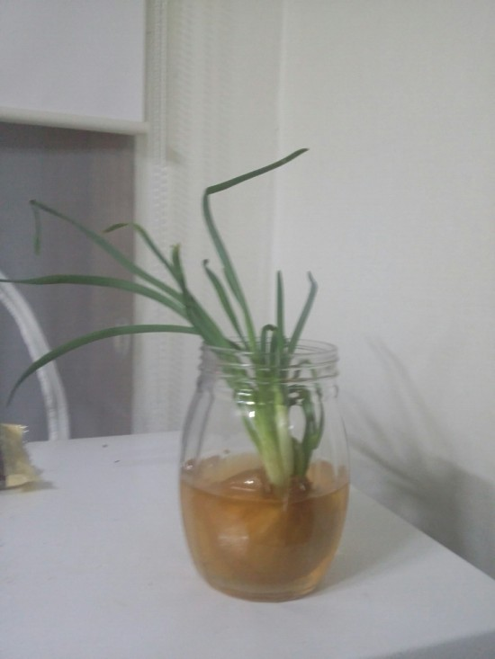

3월 27일 일요일
2016년 03월 27일1. 오전엔 아르바이트를 시작했다. 3월까지만 주 6일 중에 3일은 저녁 여섯시까지 하기로 해서 몸이 너무 피곤하다. 아침 6시에 일어나는게 아직도 적응 안돼 죽겠다. 아침마다 박카스를 사가지고 가고있다. 내가 이렇게 박카스가 잘 듣는 줄 몰랐다. 3월도 말이니 아마 다음주부턴 몸관리도 하면서 안정적으로 시간 운용이 되지 않을까.
2. 최근의 삶이 참 산문적이라고 느꼈다. 사실 근본이 설명충인 내 사고는 대체로 산문적으로 돌아가긴 한다. 그래서 그 사이에 미약하게 끼어있는 운문을 내가 참 사랑하고 있는데.
+ 그러고보니 최근에 생긴 동거자 자랑을 안했다. 사 놓은 양파가, 마트에서 제일 싼걸 사오긴 했지만 너무 쉽게 물러버려서 분노하던 찰나, 건방지게도 한놈이 살살 싹을 트여오길래 머리채같은 줄기를 한 웅큼에 잡아다가

키우고 있다. 엄마는 잘라서 파처럼 먹어도 되는거라고 했다. 은성이 집에서 은성이가 끓여준 된장국이 생각난다. 양파줄기를 송송 잘라 국에 넣었었지... 음.. 너무 잘커서 무섭다. 이름은 링이로 지을까. 양파링의 링...